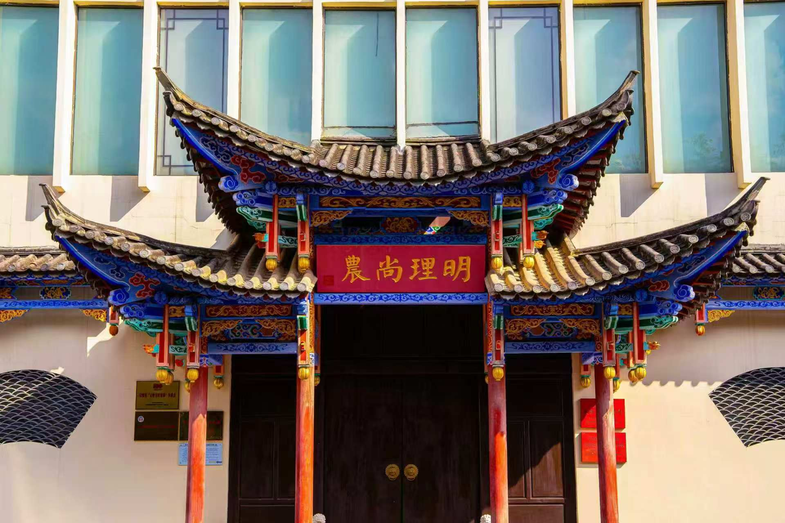
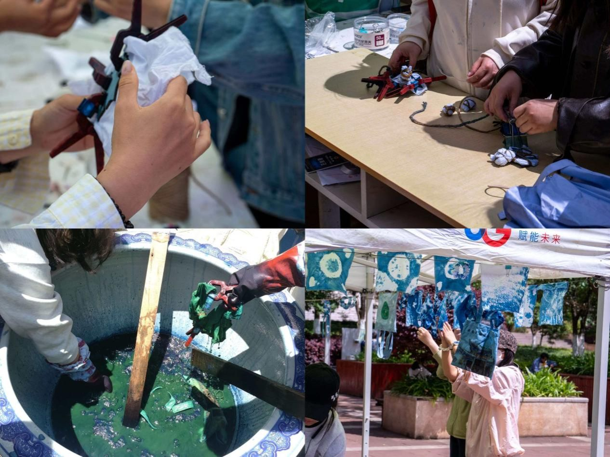
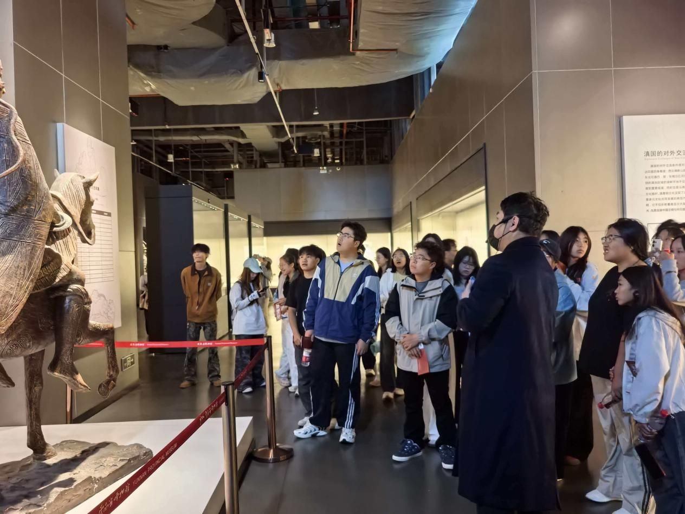
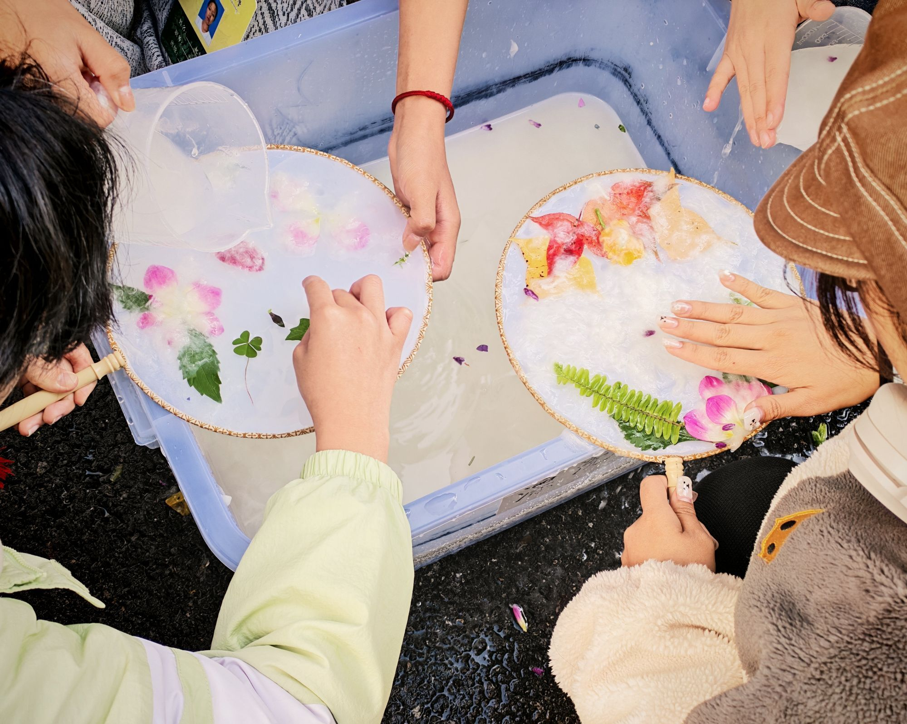
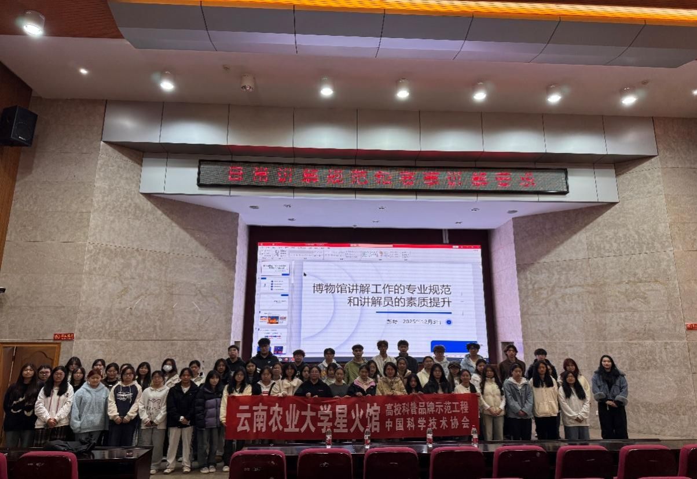
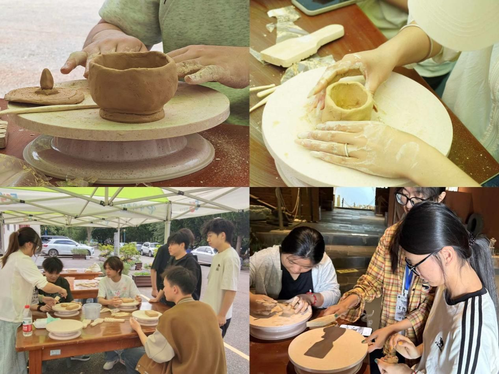

行政部
统筹考勤后勤、到梦空间活动发布，保障日常事务平稳运行。
日常统筹
我们是谁
科普站依托云南民族农耕文化博物馆成立，依托展馆2018年建成、2022年设立专职管理部门的发展基础，深耕云南少数民族农耕文化传承传播。社团以传承农耕文脉、普及生态科普、服务实践育人为主旨，面向在校学生吸纳志愿讲解员与文化科普志愿者。
社团长期开展展馆日常讲解接待、农耕文物学习、民族农事节庆研学、云岭百姓宣讲等活动，组织成员参与校内外科普宣讲、中小学生研学导览、农耕文化资料整理。近年来，社团围绕七大主题展区资源，依托省级社科普及基地、宣讲示范点平台，打造馆内志愿讲解、农耕文化科普课堂两大特色活动。
未来，社团将持续深挖云南少数民族农耕内涵，丰富科普实践活动，联动校内外平台开展农耕文化传播，发挥博物馆教学、科研、科普一体化平台作用，助力少数民族农耕文化活态传承。
组织架构
统筹考勤后勤、到梦空间活动发布，保障日常事务平稳运行。
日常统筹负责活动策划、团建统筹、物资物料储备，确保活动顺利进行、凝聚团队。
活动组织运营宣传平台、撰写文案、制作图文，对外展示活动，扩大组织影响力。
文化传播活动剪影
从馆内讲解到非遗手作，从研学接待到文化体验，
每一次相遇，都是对云南民族农耕文化的生动讲述。
科普实践

一开展非遗纸扇制作、农耕用具创作赛、扎染、慢轮制陶实践；面向全校学生，优秀农具作品入馆陈列，让参与者沉浸式体验非遗农耕技艺。
新闻来源：以耕读育新人 以非遗传文脉——云南民族农耕文化科普站系列体验活动点亮第四届耕读文化节
二组织科普站全体成员赴云南省博物馆实地研学，梳理云南历史脉络，拓宽文化视野，夯实讲解专业能力，为农耕科普创新积累思路。
新闻来源：云南民族农耕文化科普站组织开展云南省博物馆参观学习活动
三展出傣族剪纸赛事佳作，开设傣纸竹扇、金水漏印实操体验；面向在校师生，以纸为纽带沉浸式体验傣族非遗，通过观展和动手实操加深对民族传统文化的感知。
新闻来源：云南民族农耕文化博物馆举办“以纸为媒，共筑傣华”系列活动
四邀请全国十佳科普使者彭野开展讲解专题培训，面向科普站、校史馆等星火馆讲解员，讲授仪态、讲解技巧与应急方法，搭建专业讲解培训体系，提升队伍科普宣讲综合能力。
新闻来源：“全国十佳科普使者”彭野莅临指导，赋能星火馆科普讲解队伍建设
五开展慢轮制陶实操体验，学习揉泥、拉坯、塑形；面向全校学生，让参与者沉浸式体验传统制陶非遗，感受手工技艺与民族文化底蕴。
揉泥 · 拉坯 · 塑形 · 非遗体验成长印记
第十四届社团嘉年华
年度社团表彰